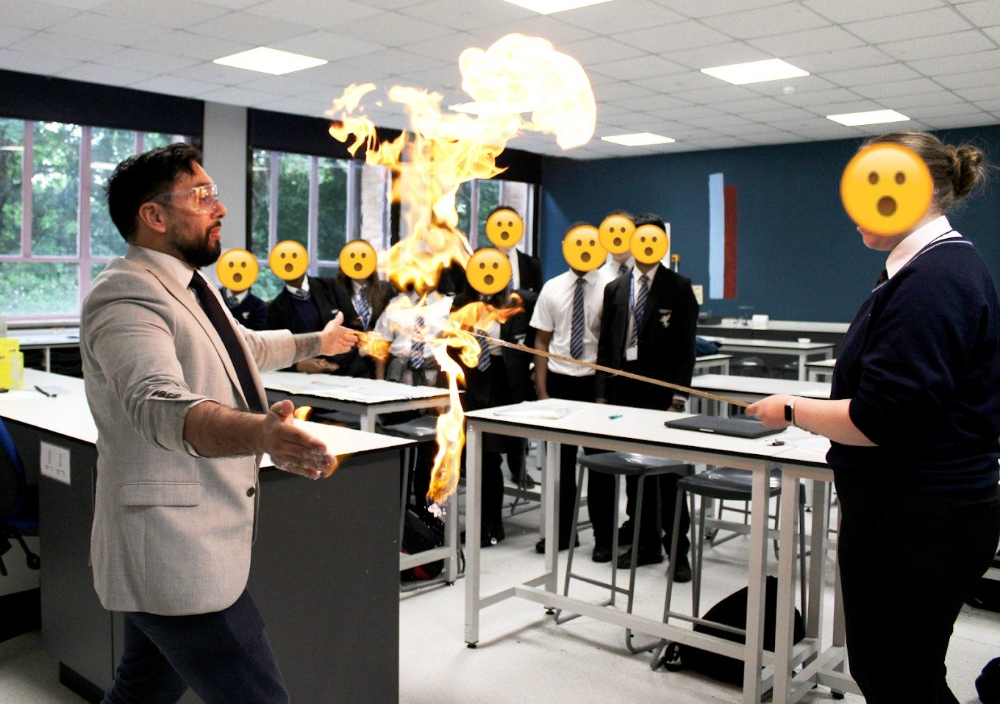

King Edward's 11+ Preparation. The right prep for the right school.
Start with the right admissions route. The King Edward VI grammar schools participate in a shared entrance test; King Edward’s School and King Edward’s High School for Girls have their own processes. Teaching Success can discuss preparation around your child’s current learning needs, in Smethwick or online.
Confirm the school and entry year. Check the test route and admissions policy before planning preparation.
Qualified teachers. Kevin (secondary maths/science, QTS) and Serena (primary, QTS). Both have been teaching the relevant subject areas for years.
Use practice to plan learning. Identify the skill to work on next; a practice score cannot guarantee admission.
From £15/hour. Free first lesson. No obligation to continue.

Kevin & Serena Johal · Teaching SuccessQualified teachers. KE preparation from Year 4 to exam day.
KE schools we prepare for
KE Handsworth Grammar School for Boys
KE Five Ways (Bartley Green)
KE Camp Hill Boys & Girls
KE Aston (Boys) & KE Handsworth (Girls)
🏫 KE Handsworth Grammar
🏫 KE Five Ways
🏫 KE Camp Hill
🏫 KE Aston
🏫 KE Handsworth
📐 GL Assessment
Know the admissions route
Similar school names do not mean identical entrance tests.
The six King Edward VI grammar schools in Birmingham and the two independent schools need to be distinguished before you select practice materials or register.
The six King Edward VI grammar schools
Aston, Camp Hill Boys, Camp Hill Girls, Five Ways, Handsworth Grammar School for Boys and Handsworth School for Girls appear on the official Birmingham grammar-school list. They participate in the shared entrance-test arrangements, while applying individual admissions policies.
Do not convert a home practice percentage into an admissions prediction. For an example of the documents to check, see Five Ways’ entry-year policy and timetable. A test result is not an offer of a place.
The King Edward's Test
What the KE 11+ test actually looks like.
The West Midlands entrance test covers four subject areas across two GL Assessment papers. Individual schools apply their published admissions arrangements. The subject areas below show the learning skills that preparation can address.
Maths
What the KE maths paper tests
Multi-step word problems requiring two or three calculations
Fractions, decimals, percentages and ratio applied in context
Shape and measurement — area, perimeter, volume, angles
Data: tables, bar charts, line graphs, pie charts, mean, mode, range
All multiple-choice — distractor answers are specifically designed to match common errors
English
What the KE English paper tests
Reading unfamiliar passages and locating evidence for an answer
Inference and deduction questions — reading between the lines
Vocabulary in context — "which word is closest in meaning to X?"
Synonym and antonym standalone questions
Cloze passages — choosing the best word to complete a gap
Grammar and punctuation questions
Verbal Reasoning
What the KE VR paper tests
Word codes — e.g. if CAT = 3-1-20, what is DOG?
Analogies — e.g. big is to small as fast is to ___
Missing letters in word sequences
Number sequences and logic puzzles
Letter series and alphabet position questions
Fastest-paced paper — around 40 seconds per question
Non-Verbal Reasoning
What the KE NVR paper tests
Shape series — identify the next shape in a sequence
Odd one out — find the shape that does not belong
Analogies — as this shape is to this, so this is to ___
Nets of 3D shapes — which net folds to make this cube?
Mirror images and rotation
No language involved — visual pattern recognition throughout
Preparation Timeline
When to start King Edward's 11+ preparation — and what to do when.
Build the plan around the actual entrance-test date and the learner’s needs. For example, Five Ways’ timetable places the September 2027 entry test in September 2026, at the beginning of Year 6. Check the next cohort’s official dates rather than reusing a previous year’s calendar.
Year 4
Build the foundations
Times tables to 12 — automatic recall
Long multiplication and short division
Fractions: equivalent and simplifying
Vocabulary building: word families, prefixes, suffixes
First exposure to VR and NVR question types
Wide reading with challenging texts
Year 5
Build up to exam content
Full maths curriculum: fractions, decimals, %, ratio, shape, data
English: all six question types, systematic vocabulary programme
VR: all 21 question types practised systematically
NVR: all question types, timed practice begins
First timed practice sections
First mock test to get a score baseline
Year 5 (spring and summer)
Full paper practice
Full timed papers every session
Error analysis after every paper
Targeted work on weakest sections
Mock tests every 6–8 weeks
Use errors to choose the next learning task
School list review and honest guidance
Before the test: summer to early Year 6
Final preparation
Agree manageable practice around the learner’s needs
Final mock test in full KE format
Exam day logistics: what to expect, timing, anxiety management
Last vocabulary review
Mental arithmetic speed checks
Confidence-building in final fortnight
Our Approach
What Teaching Success does differently for King Edward's preparation.
Not all 11+ tuition is the same. Here is what distinguishes Teaching Success from generic tutoring when it comes to King Edward's specifically.
1
Qualified teachers, not students
Kevin holds QTS for secondary maths and science. Serena holds QTS for primary. Neither is a student, a recent graduate or a part-time tutor. This matters for KE preparation because the content at the top end of the 11+ requires subject depth — particularly in maths and English — that non-teachers sometimes lack.
2
Feedback focused on learning
Review which questions the pupil can explain independently and which still need support. Keep that learning feedback separate from school admissions decisions. Families should use the relevant school’s official policy and admissions team for questions about eligibility, scores and applications.
3
Real GL Assessment papers, not stand-ins
Every timed practice session uses real past GL Assessment papers — not CGP workbook exercises or generic maths worksheets. The question styles, phrasing and multiple-choice format in our sessions are identical to what children will see on exam day. Familiarity with the actual format reduces exam anxiety and improves technique.
4
Error analysis after every session
We do not hand back a marked paper and move on. After every timed section, Kevin or Serena goes through every wrong answer with the child — not just "the answer was X" but "here is the reasoning that leads to X and here is where your thinking went wrong." This prevents the same errors recurring across papers.
5
Full four-section mock tests
Our £5 weekend mock tests cover all four KE sections back-to-back — the only way to build the stamina needed for four consecutive timed papers. Auto-marked on the day with a section breakdown and written teacher feedback. A full mock test experience is irreplaceable preparation for what exam day actually feels like.
6
Both subjects, one place
Maths and non-verbal reasoning with Kevin. English and verbal reasoning with Serena. Both are qualified. Both know the GL Assessment papers. Families do not need to find a second tutor for a second subject — and the two teachers share progress notes to avoid duplication and ensure the programme is joined up.
Practical guide · Updated
Read an admissions criterion as carefully as a test question
School admissions wording can distinguish registration, sitting a test, meeting a score requirement and being offered a place. Those stages should not be treated as interchangeable.
A practical example
When reading the relevant school’s current policy, make a note of each stage and the source that explains it. If a criterion refers to a defined area or category, use the official definition rather than a general description on a tutoring website.
Direct questions about eligibility or offers to the school or admissions authority. Tuition can develop subject understanding and test familiarity, but cannot guarantee a place or replace the application process. Keep preparation goals separate from assumptions about what a particular practice result will secure.
Build a source checklist for each school being considered
For each intended school, record its exact name, entry year and the official admissions-policy page. Keep notes about criteria separate from a child’s practice-test performance, and mark any wording that needs clarification.
Use the school or admissions authority to resolve that wording. A general guide cannot decide eligibility or predict an offer from a mock score. West Midlands registration for September 2027 entry has closed; check the official instructions for the child’s current stage rather than assuming preparation services can change that deadline.
Common questions about King Edward's 11+ preparation.
Do all six King Edward's schools use the same 11+ test?
The six King Edward VI grammar schools in Birmingham participate in the shared entrance-test arrangements, but apply their own admissions policies. King Edward’s School and King Edward’s High School for Girls are independent schools with separate assessment processes.
What score does a child need for King Edward's?
Check the published policy for the school and entry year, including any qualifying score, priority categories and oversubscription rules. The Five Ways admissions page provides its current documents. Practice-paper percentages and scores from different tests are not interchangeable, and meeting a threshold may not guarantee an offer.
Should my child apply to one KE school or several?
Families can list multiple KE schools. We typically advise two to four KE schools — a stretch school, a well-matched school and one or two backups — alongside non-KE grammar schools. Since the test is the same, applying to multiple schools adds no extra preparation. We help build a balanced, realistic list based on each child's practice performance.
When does the King Edward's 11+ test take place?
Use the official admissions timetable for your intended entry year. Preparation and registration must be considered before the entrance test, typically during Year 5, not the summer of Year 6. Confirm the date and arrangements from the allocated centre.
Free trial lesson. Honest assessment. Real preparation.
Book a free first lesson to discuss your child’s learning priorities and a suitable preparation plan. Sessions from £15/hr. Call 07909 274901. Tuition does not guarantee a school place.